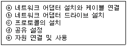
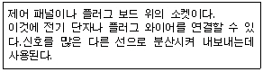
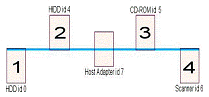
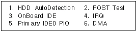
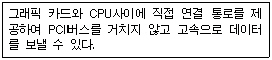
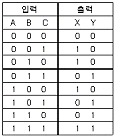
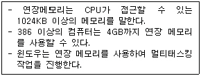

PC정비사-1급 (1999-10-24 기출문제)
1과목: PC운영체제
1. 다음 전송 매체 중 가장 빠른 통신 속도를 낼 수 있는 것은?
- Twisted Pair
- Optical Fiber
- Coaxial Cable
- Thin Cable
(정답률: 57%)

2. 다음 중 인터넷을 통하여 그림, 파일, 음성, 문자 등의 멀티미디어 정보와 하이퍼텍스트 기능을 제공하는 것은?
- Gopher
- FTP
- WWW
(정답률: 60%)
3. 다음 중 라우터(ROUTER)에 대한 설명과 거리가 먼 것은?
- 동일한 전송 프로토콜을 사용하는 분리된 네트워크를 연결해 준다.
- 알고리즘에 따라 자동으로 경로가 결정된다.
- 메시지 형식변화, 문자코드 변환, 주소변환 등의 기능을 한다.
- 여러 경로 중 가장 효율적인 경로를 선택하여 패킷을 보낸다.
(정답률: 50%)
4. 통신망과 통신망을 연결하는데 있어서 단순히 전송 신호만을 증폭하여 다시 전송해주는 역할을 수행하는 것은?
- BRIDGE
- ROUTER
- REPEATER
- GATEWAY
(정답률: 65%)
5. 인터넷에서 외부로부터 불법 침입을 막거나 접근 통제를 주된 목적으로 설치되는 장비는?
- FIREWALL
- PROXY SERVER
- FILE SERVER
- GATEWAY
(정답률: 57%)
6. 웹브라우저에서 WWW서비스를 이용하기 위하여 지원해야 하는 프로토콜은?
- FTP
- Telnet
- HTTP
- WWW
(정답률: 59%)
7. NT Server 4.0 설치시 발생할 수 있는 문제점과 이에 대한 해결책을 제시한 다음의 항목들 중 올바르지 않은 것은?
- NT를 설치하고 나서 그래픽 카드 설정이 제대로 되지 않는다. - 서비스팩 3이상을 설치한 수 그래픽 카드에 대한 재 설정을 수행한다.
- Windows 98에서 포맷한 디스크를 인식하지 못한다. - NT는 FAT32 파일 시스템을 인식하지 못한다.이에 대한 해결책으로 FAT32 파일 시스템을 FAT16으로 바꾸든지 FAT16으로 포맷하는 방법이 있다.
- 설치 과정에서 파일 시스템 타입 결정 - 시스템을 NT전용으로 사용하고자 할 경우 NTFS로 설치하는 것이 디스크 운영의 효율성을 증대시킬 수 있다.
- IIS 3.0 및 IE 4.0 버전은 기본적으로 NT설치와 함께 설치되는 것으로 서비스팩의 설치를 필요로 하지 않는다.
(정답률: 22%)
8. TCP/IP프로토콜에 대한 설명이다. 잘못된 것은?
- 물리계층, 네트워크계층, 전송계층, 응용계층 4개의 계층으로 구성된다.
- 회선 교환 방식이다.
- 인터넷에서 사용하고 있는 표준 프로토콜이다.
- 다른 기종의 컴퓨터를 연결하기 위해서 고안된 프로토콜이다.
(정답률: 42%)
9. Windows98에서 등배 간 네트워크를 구축하는 과정으로 적절한 것은 ?

- ⓒ→ⓐ→ⓓ→ⓑ→ⓔ
- ⓓ→ⓐ→ⓑ→ⓒ→ⓔ
- ⓐ→ⓑ→ⓒ→ⓓ→ⓔ
- ⓐ→ⓒ→ⓑ→ⓓ→ⓔ
(정답률: 60%)
10. 다음 설명이 가리키는 네트워크 장비는?

- 라우터
- 허브
- 스위치
- LAN
(정답률: 58%)
11. 각 CMOS 항목에 대한 설명과 권장값이 올바르게 연결되지 않은 것은?
- Standard CMOS Setup의 Floppy 3 Mode Support - 국내에서는 사용되지 않는 3.5인치 규격의 1.2MB 플로피 디스켓과 관련된 항목으로 무조건 'Disabled'로 설정한다.
- BIOS Features Setup의 CPU Level 2 Cache - CPU기판 위에 장착된 캐시를 외부(External)캐시, 또는 Level 2캐시라고 한다. 이 Level 2캐시를 사용할 것인지를 결정한다. 시스템 성능을 향상시키려면 무조건 Enabled로 설정한다. 하지만 셀러론 CPU인 경우 이 메뉴를 'Disabled'로 설정한다.
- BIOS Features Setup의 Boot Sequence - 부팅 디스크를 찾는 순서를 정해 놓으라는 의미이다. 부팅 순서를 빠르게 하려면 'C only'로 설정한다.
- BIOS Features Setup의 HDD SMART capability-하드디스크의 자체 모니터링 기능(SMART : Self-Monitoring Analysis and Reporting Technology)의 사용 여부를 결정하는 곳이다. 이 기능을 사용하게 되면 시스템 자원을 많이 사용하고 시스템 속도가 느려진다. 일반적으로 'Disabled'로 설정한다.
(정답률: 34%)
12. 하드 디스크 부트 섹터(Boot Sector)에 쓰기가 되지 않도록 설정하는 항목은 ?
- IDE HDD Block Mode Sectors
- Virus Warning or Trend Chip Away Virus
- Typematic Rate Setting
- Boot Up System Speed
(정답률: 47%)
13. 다음 칩셋 중 노트북에 사용되는 칩셋은?
- 430 FX
- 430 HX
- 430 MX
- 440 BX
(정답률: 50%)
14. CPU와 메모리 반도체의 데이터 전송속도를 100MHz로 끌어올린 CPU코드명은 ?
- 코빙턴
- 클라마스
- 멘도시노
- 데슈츠
(정답률: 14%)
15. 'Starting Windows 98.....'메시지가 나타나지 않는 하드디스크 부팅 오류로 파악하기 어려운 것은?
- CMOS SETUP에서 하드디스크를 제대로 설정하지 않았다.
- 부트 섹터에 기록된 시스템 파일에 오류가 발생했다.
- 윈도우 레지스트리 파일에 에러가 발생했다.
- 파티션 기록에 오류가 발생했다.
(정답률: 36%)
2과목: PC주변기기
16. 다음 그림은 SCSI 장치 연결 구조이다. 터미네이터를 반드시 설정해야 하는 장치(번호)만을 열거한 것은?

- 1,2,3,4
- 2,3
- 1,4
- 없음
(정답률: 32%)
17. CMOS SETUP 프로그램 중 "BIOS FEATURE SETUP"에서 설정하는 내용이 아닌 것은?
- 바이러스 경고 여부
- CPU내부 캐쉬 사용 여부
- 사용자 암호 설정
- 초당 키보드의 입력속도 설정
(정답률: 72%)
18. Windows 95/98 운영체제와 Linux 운영체제를 멀티부트 환경에서 사용하였다. 그러나 멀티부트 환경을 완전히 제거하고 Windows 95/98 운영체제만으로 사용할 경우 정상부트되지 않는 것을 볼 수 있다. 이때 가장 적절한 조치 사항은?
- fdisk → 실행영역을 지정(부트 활성화)한다.
- CMOS → Boot Disk 지정(C Only)한다.
- 'format c: /s' 명령으로 다시 포맷한다.
- 'fdisk /mbr' 명령을 수행한다.
(정답률: 62%)
19. 다음 중 Windows 95/98의 제어판의 각 아이콘의 해당파일이 잘못 연결된 것은?
- 암호-password.cpl
- 인터넷-internet.cpl
- 디스플레이-desk.cpl
- 마우스-main.cpl
(정답률: 40%)
20. MSCDEX의 기본옵션 중 디바이스의 이름을 설정하는 옵션은?
- /E
- /D
- /L
- /T
(정답률: 58%)
21. 다음 보기는 CMOS에서 제어할 수 있는 옵션 명령어이다.하드디스크가 부트되지 않을 때 반드시 점검해 보아야 할 옵션 명령어만으로 구성된 것은?

- 1,2,3,4
- 2,4,6
- 1,2,3,5,6
- 1,3,5
(정답률: 47%)
22. 메인보드에 대한 다음 설명 중 적당하지 않은 것은?
- 칩셋은 메인보드상에 납땜으로 고정된 부품으로서 업그레이드가 불가능한 부품이면서 메인보드에서 사용 가능한 CPU 및 메모리 종류 등을 결정하는 중요한 요소이다.
- 만일 시스템 BIOS 가 소프트웨어적으로 업데이트 가능한 플레쉬 메모리로 되어 있다면 시스템의 안정을 위해 가능한 자주 BIOS를 업데이트 해준다.
- 새로운 부품을 추가하고자 할 때 그 부품이 메인보드에서 지원가능한 형태인지를 확인해야 한다.
- 만일 장착한 CPU의 성능에 비해 실제 동작 속도가 현저히 낮게 동작한다고 판단될 경우 BIOS의 캐쉬 설정 부분이 활성 상태로 되어 있는지 확인하고 비활성으로 되어 있으면 활성으로 설정을 바꾼다.
(정답률: 66%)
23. 하드디스크에 파일을 복사하려 한다. 이 때 복사가 중단되면서 복사할 영역이 부족하다는 메시지를 출력할 경우 타당한 해결책으로서 적절치 못한 것은?
- 휴지통 비우기를 실행한다.
- 가상메모리 사용을 중지시키고 시스템을 다시 시작한다.
- C:디렉토리 밑의 임시 파일들 중 사용되지 않는 임시 파일들을 모두 지운다.
- Netscape 또는 Internet Explorer등의 웹 검색기들에 의해 유지되는 캐쉬 파일들을 모두 지워준다.
(정답률: 62%)
24. 차세대 메인보드로 주목받는 NLX 메인보드의 구조와 관련이 없는 것은 ?
- 라이저 보드
- 이더넷 포트
- 비디오 포트
- SIMM 슬롯
(정답률: 34%)
25. PC가 부팅되기 전에 자체진단 프로그램인 POST가 진단하는 내용이 아닌 것은?
- 하드디스크의 이상 유무 검사
- 주기억장치의 이상 유무 검사
- 키보드의 이상 유무 검사
- CPU의 이상 유무 검사
(정답률: 23%)
26. 통신 중 접속을 끊으면 no carrier가 떨어지면서 통신프로그램상에서는 끊어지지만 수화기를 들어보면 아직 안 끊어져 있는 경우가 발생했다. 어떤 식으로 해결해야 하는가?
- 모뎀의 초기화 문제로 초기화를 at&f&w로 잡는다.
- 전화선로의 문제이므로 회선을 교체한다.
- 드라이버의 이상으로 다시 설치한다.
- 확장 슬롯의 불량이므로 A/S를 받는다.
(정답률: 50%)
27. Windows NT에서 관리마법사를 이용하여 공유를 설정할 경우 반드시 사용권한을 다시 설정해 주어야 한다. 그 이유는?
- 사용자 권한의 융통성을 위해
- 사용시간 및 접근횟수를 파악하기 위해
- 보안상의 문제 때문에
- 충돌을 막기 위해
(정답률: 58%)
28. 다음중 COM 포트와 IRQ 어드레스의 기본 설정값 중 잘못 연결된 것은?
- COM1 - 4 - 03F8
- COM2 - 3 - 03E8
- COM3 - 4 - 03E8
- COM4 - 3 - 02E8
(정답률: 17%)
29. CPU의 오버클럭킹에 관한 항목이다. 오버클럭킹의 원리와 참조 내용등이 올바르지 않은 것은?
- 오버클럭킹의 성공 확률을 높이려면 램의 속도가 빠른 즉, 램 속도인 ns가 적은 램을 사용해야 한다.
- 펜티엄 Ⅲ 450은 CPU의 외부 클럭(=시스템 버스 속도, FSB)에 클럭 배수(Clock Multiplier)를 곱한 것이다. 따라서 오버클럭킹을 하려면 외부 클럭을 한 단계씩 높여준다.
- 셀러론 CPU는 작동되는 시스템 버스 속도가 66MHz이다. 때문에 셀러론 400A는 66 ＊6.0 = 400 이라는 CPU작동 클럭이 나온다.
- CPU전압 설정을 변경할 수 있는 메인보드를 구입한다. CPU가 사용하는 전압을 높여주면 오버클럭킹 성공 확률이 높아진다.
(정답률: 43%)
30. 바이러스로 인한 오류와 건전지의 소모로 인한 오류는?
- 메모리 테스트 오류
- 데이터 오류
- 시스템 파일 오류
- CMOS 오류
(정답률: 38%)
3과목: 디지털 논리회로
31. 인터레이스 모드 모니터에서 주사율과 수직 주파수간에는 어떤 관계가 있는가?
- 주사율=수직주파수
- 주사율=수직주파수/2
- 주사율=수직주파수*2
- 주사율=수직주파수/3
(정답률: 50%)
32. 펜티엄용 ATX 메인보드의 특징이 아닌 것은?
- Windows 98에서 시스템이 종료되면 자동으로 전원이 꺼진다.
- 열을 식히기 쉽도록 부품이 배치되어 있다.
- 조립과 전원관리가 쉽다.
- 전원연결커넥터의 모양은 AT타입 메인보드와 같다.
(정답률: 54%)
33. ISO에 의하여 제정된 CD-ROM의 국제 형식규격으로 High Sierra 규격에 기초를 둔 규격은?
- ISO9000
- ISO9002
- ISO9096
- ISO9660
(정답률: 25%)
34. 모니터와 본체를 연결하는 커넥터는 15핀을 사용한다. 다음중 핀의 번호와 사용용도가 잘못된 것은?
- 1, 2, 3-R, G, B 선
- 6, 7, 8-접지
- 4, 5, 9-핀 없음
- 13, 14-수평,수직동기
(정답률: 59%)
35. DVD-ROM에 대한 설명으로 틀린 것은 ?
- 비디오, 오디오, 컴퓨터 데이터를 포괄하는 새로운 저장매체.
- 16 : 9 와이드 화면을 수용하며, 음향은 5:1 채널이 지원.
- MPEG 4에 따라 부호화하여 저장.
- 보통 4.7GB에서 최대 17GB까지 저장가능.
(정답률: 67%)
4과목: PC유지보수
36. CD-ROM 드라이브는 배속과 전송속도(KB/sec)에 따라 데이터의 전송능력이 달라진다. 다음 중 배속과 전송속도의 표현으로 잘못 연결된 것은?
- 8배속→1200(KB/sec)
- 10배속→1500(KB/sec)
- 24배속→3200(KB/sec)
- 32배속→4800(KB/sec)
(정답률: 67%)
37. 펜티엄 CPU의 모델별 설명이다. 틀린 것은?
- P24T : 486메인보드용으로 만들어진 펜티엄 CPU
- P5 : 초기 펜티엄 60, 66MHz CPU
- P54C : 5V 전압사용과 FPU의 성능 향상
- P55C : MMX 펜티엄 CPU
(정답률: 22%)
38. 다음은 어느 장치의 기능을 설명한 것인가?

- DMA
- Accelerated Graphic Port
- Mpeg Card
- PC-100
(정답률: 31%)
39. 모뎀에 대한 다음 설명 중 올바른 것은?
- 56Kbps는 모뎀의 전송 속도를 나타내는 것으로서 초당 56000 비트를 전송할 수 있음을 나타내는 것이다. 따라서 56Kbps급 모뎀은 항상 56000비트 이상을 전송할 수 있음을 보장한다.
- 14.4K 이상의 속도를 내는 외장형 모뎀의 경우 시스템에 내장되어 있는 UART의 기능을 고려하지 않아도 된다.
- ISDN은 제어와 데이터 전송을 위해 3개의 채널을 사용하여 128Kbps의 속도를 제공하는 매우 고속의 통신 수단으로서 전화와 데이터 통신을 동시에 할 수 있게 한다.
- 팩스 모뎀에서 팩스 송수신을 위한 속도는 9600bps의 속도로 전송된다.
(정답률: 14%)
40. 모니터에 대한 다음 설명 중 옳지 않은 것은?
- 모니터 성능의 중요 요소인 리프레시 레이트는 화면 갱신율을 나타내는 것으로 눈의 피로도를 줄이기 위해 VESA는 이 리프레시 레이트를 60Hz 이상으로 규정하고 있다
- 일반적으로 모니터 크기와 해상도의 관계는 14인치가 640×480, 15인치가 800×600, 17인치가 1024×768을 권장사항으로 하고 있다.
- 모니터의 크기가 클수록 화면 가시영역이 넓어져 다중작업을 수행하는 데 효과적이다.
- 일반적으로 모니터의 크기가 커지면 소모되는 소비 전력도 동반 상승한다.
(정답률: 47%)
41. 셀러론 400Mhz CPU를 펜티엄 II 450 Mhz 처럼 높은 클럭으로 작동하게 하려고 한다. 이렇게 CPU의 작동 클럭을 원래의 클럭보다 높이는 것을 오버클러킹이라고 한다. 본래의 셀러론 400Mhz로 설정할 때의 배율, 그리고 펜티엄 II와 같은 클럭으로 동작하게 하기 위해 오버클러킹에 사용될 배율은 어떻게 될까?
- 7.0, 4.5
- 7.0, 5.5
- 6.0, 4.5
- 4.0, 4.5
(정답률: 28%)
42. 다음 중 펜티엄II의 구조적특징이 아닌 것은?
- 슈퍼스칼라(superscalar)레벨3 지원
- 70개의 새로운 이미지처리용 명령세트 추가
- L2 캐시의 내장
- 파이프라인을 이용한 명령어 처리
(정답률: 36%)
43. '셀러론 300' 이후 L2(128KB) 캐시장착 제품을 '셀러론 300A'라 불렀듯이 인텔의 펜티엄-III 프로세서에도 'B'와 'E' 등과 같은 확장자가 붙여지게 된다. 다음 중 잘못된 연결된 것은?
- PIII-600EB MHz → Intel Pentium III 600MHz (100MHz FSB, off-chip 256KB L2 캐시)
- PIII-600B MHz → Intel Pentium III 600MHz (133MHz FSB, off-chip 256KB L2 캐시)
- PIII-600E MHz → Intel Pentium III 600MHz (100MHz FSB, on-chip 256KB L2 캐시)
- PIII-600EB MHz → Intel Pentium III 600MHz (133MHz FSB, on-chip 256KB L2 캐시)
(정답률: 40%)
44. 디스플레이 어댑터에서 1024×768의 해상도로 24비트 트루칼라로 표현하려면 비디오 메모리는 몇 MB가 필요한가?
- 1MB
- 2MB
- 3MB
- 4MB
(정답률: 20%)
45. 모뎀의 속도와 전송규약이 올바르게 연결되어 있는 것은?
- 14.4Kbps : V.34
- 28.8Kbps : K6 Flex
- 33.6Kbps : V.fast
- 56Kbps : V.90
(정답률: 60%)
46. 다음 중 디지털 집적회로에 대한 설명으로 옳지 않은 것은?
- TTL은 디지털 집적회로 중의 하나이다.
- C-MOS는 디지털 집적회로 중의 하나이다.
- C-MOS는 트랜지스터를 서로 조합해 제작된 집적회로이다.
- 디지털 집적회로는 반도체 구조나 전기적 특성을 고려하여 제작된다.
(정답률: 60%)
47. DRAM과 SRAM을비교할 때 DRAM이 갖는 장점은?
- 리플레쉬(refresh)용 회로가 필요하다.
- 동작속도가 빠르다.
- 주변회로가 간단하다.
- 집적도가 높다.
(정답률: 36%)
48. 다음 논리 IC 중 자체 전력 소모가 가장 적은 것은?
- ECL
- CMOS
- TTL
- DTL
(정답률: 54%)
49. 다음 중 정보의 크기 순으로 나열된 것은?
- 비트-바이트-워드-아이템-필드-레코드-파일
- 비트-바이트-워드-필드-아이템-레코드-파일
- 비트-바이트-아이템-워드-필드-레코드-파일
- 비트-바이트-워드-아이템-파일-레코드-필드
(정답률: 39%)
50. 다음의 진리표에서 기술하고 있는 내용의 기능을 갖는 조합논리회로는 무엇인가?

- 레지스터(Register)
- 반가산기(Half Adder)
- 계수기(Counter)
- 전가산기(Full Adder)
(정답률: 36%)
5과목: PC네트워크
51. Windows 95를 종료할 때 나타나는 그림을 변경하고자 한다. 다음 중 틀린 것은?
- logos.sys와 logow.sys를 다른 그림으로 변경한다.
- 종료할 때 나타나는 그림은 비트맵으로 구성되어 있다.
- 해상도는 640 ｘ 480 이다.
- 색상은 256 이다.
(정답률: 28%)
52. DOS와 Windows 98 그리고 LINUX 운영체제를 하나의 컴퓨터에서 사용하고자 한다. 인스톨의 순서는?
- DOS - LiNUX - Windows 98
- 함께 사용할 수 없다.
- DOS - Windows98 - LINUX
- LINUX - Windows98 - DOS
(정답률: 36%)
53. 전자우편함에 Important Message From "사용자" 라는 제목이나 편지의 내용중에 "Here is that document you asked for. don't saw anyone else;-> "라는 내용이 있을 때 이 파일은 무엇인가?
- 매크로바이러스-멜리
- CHI 바이러스
- 해피99 바이러스
- 백오러피스 바이러스
(정답률: 73%)
54. 다음의 요소 중에서 운영 체제의 성능을 평가하는 기준으로서 틀린 것은?
- 처리능력(Throughput)
- 메모리 용량
- 신뢰도(Reliability)
- 응답시간(Turnaround Time)
(정답률: 50%)
55. 다음은 최근 들어 많이 사용되고 있는 ACE 확장자를 가진 압축 파일을 관리하는 WinACE 유틸리티의 압축화면이다. 압축 파일에 폴더 구조 및 경로 정보를 함께 압축하고 싶다면 어떤 옵션을 선택해야 하는가?
- ①, ③
- ②, ④, ⑤
- ③, ④
- ④, ⑤
(정답률: 24%)
56. 다음 보기에서 설명하는 메모리를 관리하기 위해 필요한 프로그램의 파일 이름은?

- EMM386.EXE
- HIMEM.SYS
- QMEM.EXE
- MEM.EXE
(정답률: 69%)
57. Windows 98에서 레지스트리가 손상되어 부팅조차 되지 않을 때, Windows를 정상적으로 동작했던 상태로 복구하려면 가장 좋은 방법은 백업해 놓은 레지스트리를 이용해 복구하는 것이다. 다음 중 레지스트리를 복구하는 방법은?
- 도스 모드로 부팅한 다음 'scanreg /restore'를 실행해 레지스트리 파일을 복구한다.
- 도스 모드로 부팅한 다음 'scanreg /fix'를 실행해 레지스트리 파일을 복구한다.
- c:폴더에 있는 rb000.cab 파일의 압축을 풀면 system.dat, user.dat 파일이 나온다. 이 파일로 c:폴더에 들은 system.dat, user.dat 파일을 덮어쓴다.
- 루트 디렉토리에 있는 system.1st, user.1st 파일의 이름을 system.dat, user.dat 로 바꾸어 c:windows 폴더에 있는 system.dat, user.dat 파일을 덮어쓴다.
(정답률: 65%)
58. 다음 중 윈도우에서 사용자 인터페이스에 대한 설명으로 알맞지 않은 것은?
- 프린터가 공유되어 프린터 폴더에 들어가 있으면 다른 장소에서도 인쇄가 가능하다.
- 내 컴퓨터 창은 여러 개를 열어 놓을 수 있으며 내 컴퓨터의 아이콘 이름도 바꿀 수 있다.
- 하나 이상의 파일이나 폴더를 한꺼번에 선택하려면 Ctrl 키를 누르고 마우스로 해당 파일이나 폴더를 클릭 해주면 된다.
- 탐색기 창에서는 숨겨진 파일이나 폴더를 볼 수 없다.
(정답률: 47%)
59. Windows 95의 레지스트리에 대한 설명이다. 잘못 설명된 것은?
- 텍스트 기반이며, 크기가 64KB를 넘지 못한다.
- 정렬된 계층구조를 가진다.
- HKey-User키로 사용자별 정보를 지원한다.
- 원격지에서 관리와 시스템 정책을 할 수 있다.
(정답률: 59%)
60. 네트워크와 관련된 다음의 설명 중 적절하지 않은 것은?
- 네트워크 환경에 웍그룹 컴퓨터들이 나타나지 않을 경우 시스템 로그인을 다시 해 본다.
- 다른 컴퓨터들은 나타나면서 자신의 컴퓨터가 네트워크 환경에 나타나지 않을 경우 네트워크 설정에서 파일 및 프린터를 공유하도록 설정 변경 후 시스템을 다시 시작한다.
- 네트워크 환경에 전체 네트워크 아이콘만 나타나고 아무것도 나타나지 않을 경우 네트워크 어뎁터에 문제가 발생했는지 여부와 케이블이 정확하게 연결되어 있는지의 여부를 점검해 본다.
- 네트워크 환경을 통해 다른 컴퓨터와 자원 공유는 되면서 Web 탐색기가 작동을 하지 않을 경우 컴퓨터 이름 및 작업그룹에 문제가 있을 수 있으므로 컴퓨터 및 작업그룹 이름을 바꾸어 준다.
(정답률: 27%)